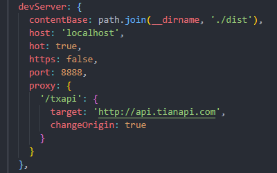

上面的显示的信息是对于Webpack请求代理配置的自验和功能展示，千万不要以为是广告植入。这里去请求了一个第三方的接口地址，如果你目前是通过npm start启动的项目，那么这些数据是动态获取的，如果你是从dist中直接打开的本地页面，那么这些数据从有页面引入的json中获取。代理接口地址的修改在server.js中可以看到proxy属性，请根据自己项目情况自行设定。另外，开发环境端口后的配置也在此文件中。
全局变量的配置
通过Webpack的DefinePlugin，我们可以获取到指定变量在不同开发环境下的取值，这些配置在config目录下的dev.config.js和prod.config.js两个文件中。现在你可以打开控制台查看当前对API变量的取值情况。
全局引入jQuery、Lodash、Echarts
在配置webpack时已将jQuery、Lodash、Echarts这三个常用库全局引入，各个模块中可直接调用。就像本页面在demo.js中将他们直接打印出来，但没有在文件顶部引入，你可以去控制台查看打印结果。
图片的引入
字体图标的引入
只需在主入口文件或页面对应的css文件中引入相应的字体css文件即可，示例图标：
你还可以尝试Bootstrap Icons
同时了解下Bootstrap4
关于HTML文件没有热重载
由于为了满足img标签通过src属性链接图片而采用了html-loader，目前不能实现Html文件变更的响应。
模拟Element的Select选择器
Select选择器基于jQuery和jQuery.niceScroll（存放在lib目录下）及Bootstrap编写，存放在plugin目录下，使用时先引入该插件后$('')选择元素调用.select方法，接收数据数组和回调两个参数。提供setData、setValue、setCallback和value四个接口，分别用来初始化后更新数据、设值、添加或修改回调、取值。select.sass文件顶部定义有颜色变量可修改。
Back to index